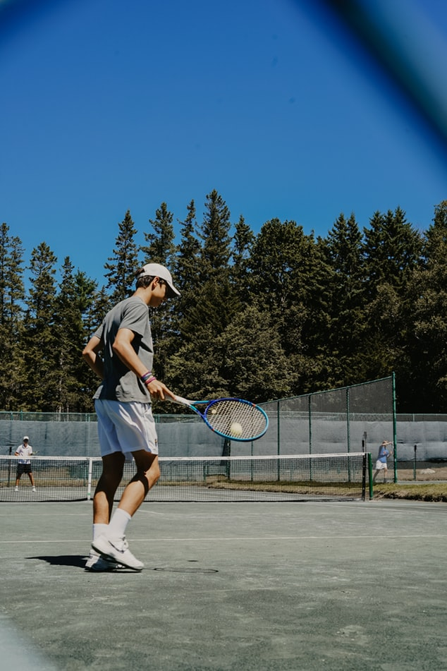
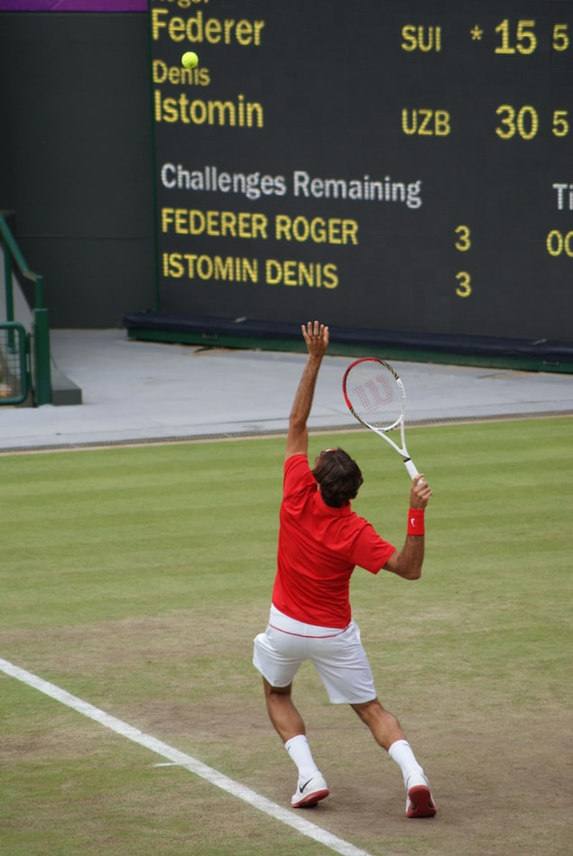
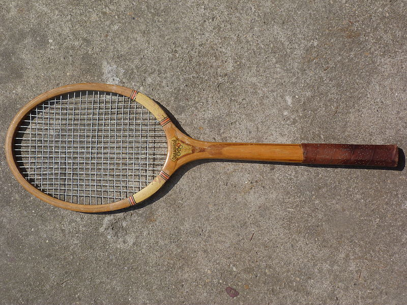
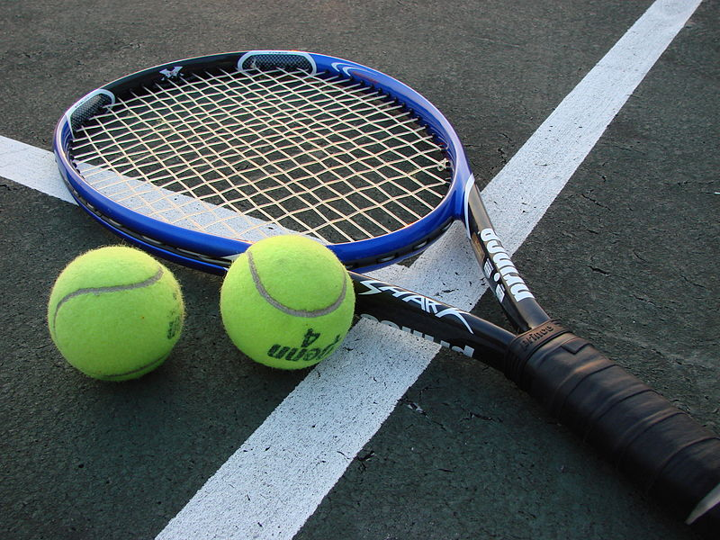
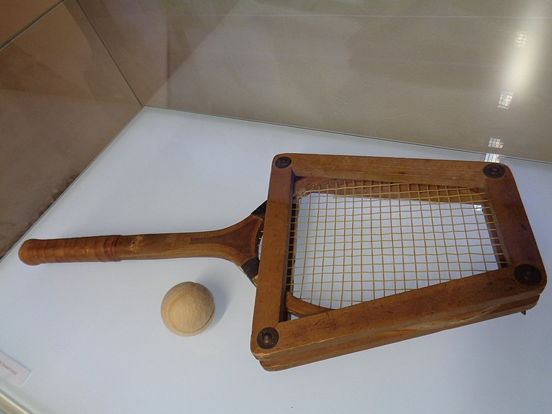

Tennis is a racket sport that can be played individually against a single opponent (singles) or between two teams of two players each (doubles).
Each player uses a tennis racket that is strung with cord to strike a hollow rubber ball covered with felt over or around a net and into the opponent's court.
The object of the game is to maneuver the ball in such a way that the opponent is not able to play a valid return.
The player who is unable to return the ball will not gain a point, while the opposite player will.

Tennis is an Olympic sport and is played at all levels of society and at all ages.
The sport can be played by anyone who can hold a racket, including wheelchair users. The modern game of tennis originated in Birmingham, England, in the late 19th century as lawn tennis. It had close connections both to various field (lawn) games such as croquet and bowls as well as to the older racket sport today called real tennis.
During most of the 19th century, in fact, the term tennis referred to real tennis, not lawn tennis.

The components of a tennis racket include a handle, known as the grip, connected to a neck which joins a roughly elliptical frame that holds a matrix of tightly pulled strings. For the first 100 years of the modern game, rackets were made of wood and of standard size, and strings were of animal gut. Laminated wood construction yielded more strength in rackets used through most of the 20th century until first metal and then composites of carbon graphite, ceramics, and lighter metals such as titanium were introduced. These stronger materials enabled the production of oversized rackets that yielded yet more power. Meanwhile, technology led to the use of synthetic strings that match the feel of gut yet with added durability.

Tennis balls were originally made of cloth strips stitched together with thread and stuffed with feathers. Modern tennis balls are made of hollow vulcanized rubber with a felt coating. Traditionally white, the predominant colour was gradually changed to optic yellow in the latter part of the 20th century to allow for improved visibility. Tennis balls must conform to certain criteria for size, weight, deformation, and bounce to be approved for regulation play. The International Tennis Federation (ITF) defines the official diameter as 65.41–68.58 mm (2.575–2.700 in). Balls must weigh between 56.0 and 59.4 g (1.98 and 2.10 oz). Tennis balls were traditionally manufactured in the United States and Europe. Although the process of producing the balls has remained virtually unchanged for the past 100 years, the majority of manufacturing now takes place in the Far East. The relocation is due to cheaper labour costs and materials in the region. Tournaments that are played under the ITF Rules of Tennis must use balls that are approved by the International Tennis Federation (ITF) and be named on the official ITF list of approved tennis balls.

Advanced players improve their performance through a number of accoutrements. Vibration dampeners may be interlaced in the proximal part of the string array for improved feel. Racket handles may be customized with absorbent or rubber-like materials to improve the players' grip. Players often use sweat bands on their wrists to keep their hands dry and head bands or bandanas to keep the sweat out of their eyes as well. Finally, although the game can be played in a variety of shoes, specialized tennis shoes have wide, flat soles for stability and a built-up front structure to avoid excess wear.